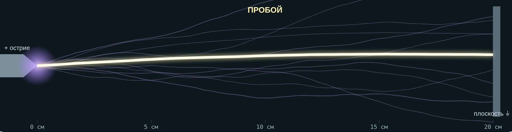
Техника высоких напряжений · лекция 3
Как лавина превращается в канал, почему знак острия меняет пробивное напряжение вдвое и сколько длится пробой
13.03.02 · интерактив «Стример, лидер, искровой разряд» · по учебнику Важова и Лавриновича, разд. 1.1–1.2
Цели лекции
1
Объяснить, как лавина становится стримером и почему он растёт сам
2
Отличить положительный стример от отрицательного
3
Оценить пробивное напряжение с учётом полярности
4
Описать лидер, его нагрев и финальный скачок
5
Посчитать U₅₀ длинного промежутка по Галле
6
Найти время разряда и прочитать вольт-секундную характеристику
Два вопроса на всю пару
94 и 234 кВ
Острие в 20 см от заземлённой стенки. При «+» на острие промежуток пробивается при ≈ 94 кВ, при «−» — при ≈ 234 кВ. Почему знак так важен?
1,9 МВ
Если 20 см держат ≈ 94 кВ, то 10 м должны держать ≈ 4,7 МВ. А держат лишь ≈ 1,9 МВ. Куда делась прочность?
1 · От лавины к стримеру
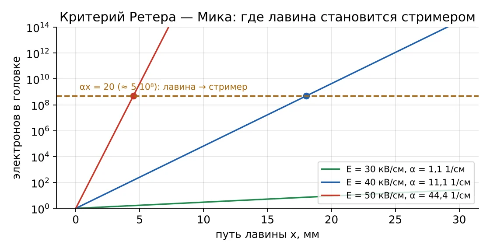
αxкр ≈ 18–20
В головке ≈ 10⁸ электронов, их поле сравнялось с внешним. Формулы лавины перестают работать.
При 40 кВ/см: α ≈ 11 1/см, xкр ≈ 1,8 см. Промежуток длиннее — пробой пойдёт по стримерному механизму.
1 · Почему одной теории Таунсенда мало
| Наблюдение | Ждём по Таунсенду | Видим на опыте |
|---|---|---|
| Время пробоя 1 см | несколько пробегов ионов, ≥ 10⁻⁵ с | ≈ 10⁻⁸–10⁻⁷ с |
| Материал катода (γ) | влияет | почти не влияет при большом p·S |
| Форма канала | диффузное свечение | тонкий извилистый ветвистый канал |
| Где начинается | у катода | может начаться в середине промежутка |
Вывод: при атмосферном давлении и промежутках от ≈ 1 см разряд развивается сам, без участия катода — это стример.
2 · Положительный стример · вкладка 1
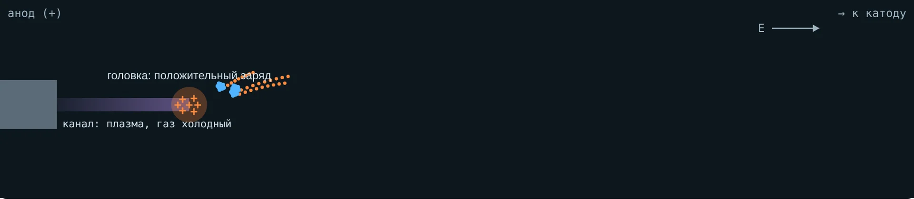
Возбуждённый азот светит ультрафиолетом, фотоны ионизируют кислород впереди
Затравочные электроны летят к положительной головке и размножаются в её поле
Электроны входят в канал, хвосты ионов становятся головкой ближе к катоду
2 · Отрицательный стример · вкладка 1
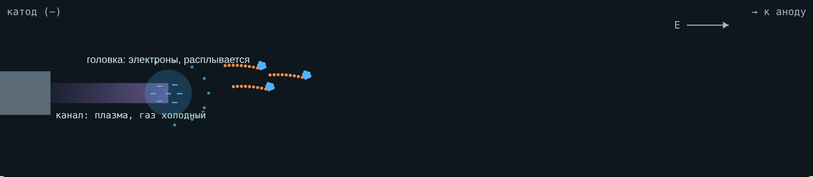
Электроны головки сами уходят вперёд по полю, к аноду. Заряд головки размазывается, её поле слабее: 100–120 кВ/см против 120–160 у положительной.
Лавины бегут от головки. Чтобы стример не затух, нужно внешнее поле в 2–2,5 раза сильнее, чем для положительного.
2 · Сравнение
| Положительный (+) | Отрицательный (−) | |
|---|---|---|
| Куда растёт | к катоду, навстречу электронам | к аноду, вместе с электронами |
| Головка | ионы, компактная, 120–160 кВ/см | электроны, расплывается, 100–120 кВ/см |
| Поле устойчивости Es | ≈ 4,7 кВ/см | ≈ 11,7 кВ/см |
| Скорость | 10⁵ … 4·10⁶ м/с | на 20–25 % меньше |
| Диаметр | от 0,2 мм у самых тонких | толще, от ≈ 1 мм |
| Вид | тонкие ветвящиеся нити | короткие толстые кисти |
3 · Поле устойчивости
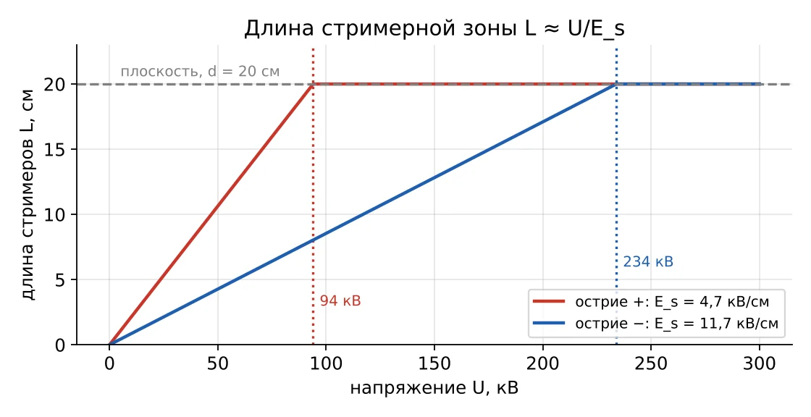
L ≈ U / Es
Uпр ≈ Es·d
20 см: 94 кВ при «+» и 234 кВ при «−».
Работает для резко неоднородных промежутков до ≈ 1 м. Дальше нужен лидер.
В интерактиве · вкладка 1
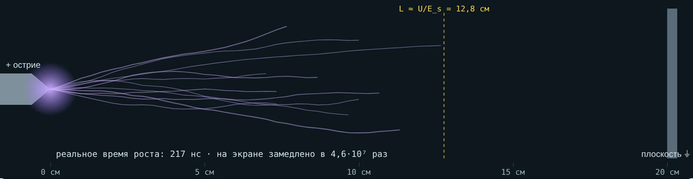
Острие +: стримеры 12,8 см
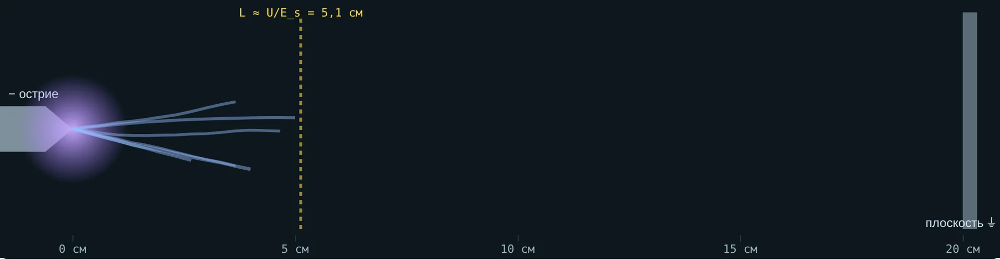
Острие −: стримеры 5,1 см
Поднимите напряжение: при «+» стримеры дорастут до плоскости на 94 кВ, при «−» — лишь на 234 кВ.
4 · Полярный эффект · вкладка 2
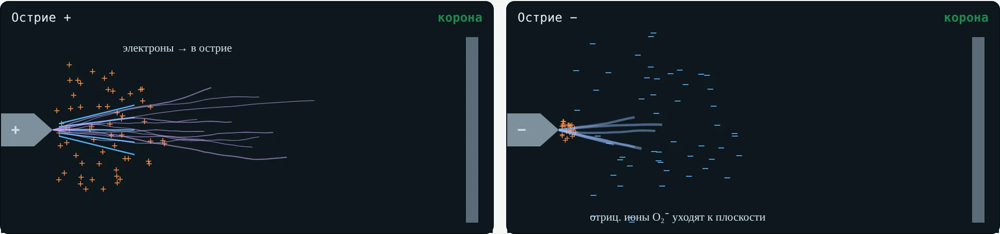
Электроны уходят в острие, ионы «+» остаются перед ним и удлиняют острие — поле дальше в промежутке сильнее
Ионы «+» прижаты к острию и усиливают поле у него, а облако ионов O₂⁻ дальше ослабляет поле в промежутке
4 · Поле вдоль оси
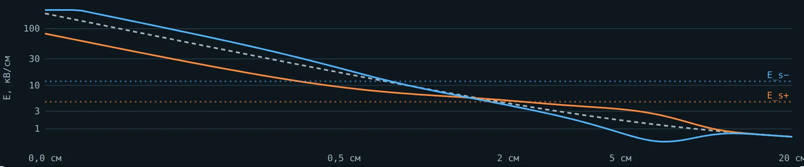
Острие +: у острия поле ниже, дальше — выше и дольше держится над Es+
Острие −: у острия всплеск, дальше провал ниже Es− — стримеры гаснут
4 · Зажигание и пробой
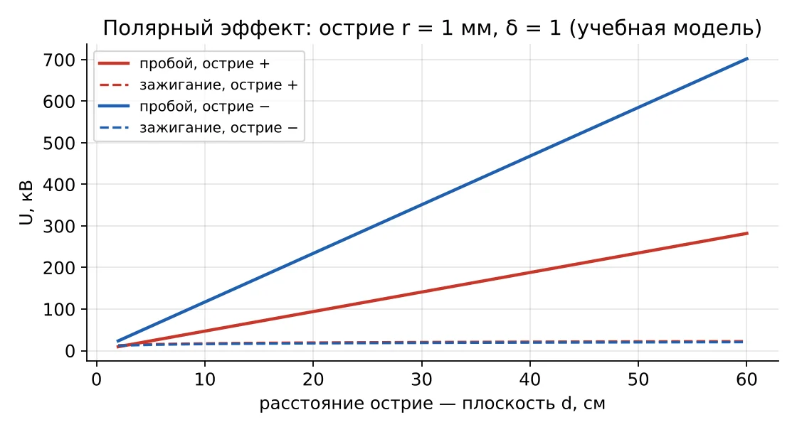
Пробой растёт с d: 4,7·d и 11,7·d кВ (d в см).
Зажигание почти не зависит от d — его задаёт радиус острия.
Отношение пробивных напряжений ≈ 2,5.
4 · Где это важно
Внешнюю изоляцию испытывают импульсами обеих полярностей: для воздушных промежутков опаснее положительная
Пробой резко неоднородного промежутка наступает в положительный полупериод на острие
У шины «+» острая кромка опаснее, чем у шины «−»: зазоры считают по худшей полярности
На отрицательной острой кромке корона начинается раньше: треск и помехи появляются при невысоком напряжении
5 · Длинные промежутки
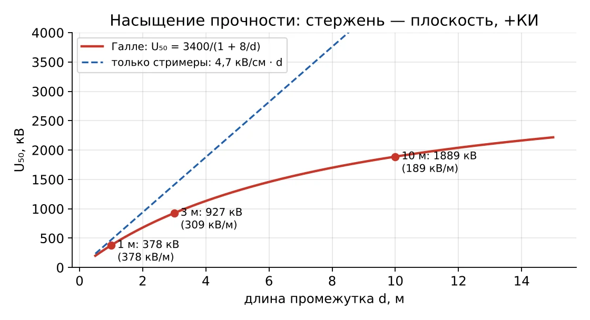
U₅₀ = 3400·k / (1 + 8/d)
d в метрах, k = 1 для стержня над плоскостью, положительный коммутационный импульс.
1 м — 378 кВ/м, 10 м — 189 кВ/м. Ответ на второй вопрос-загадку — лидер.
5 · Рождение лидера
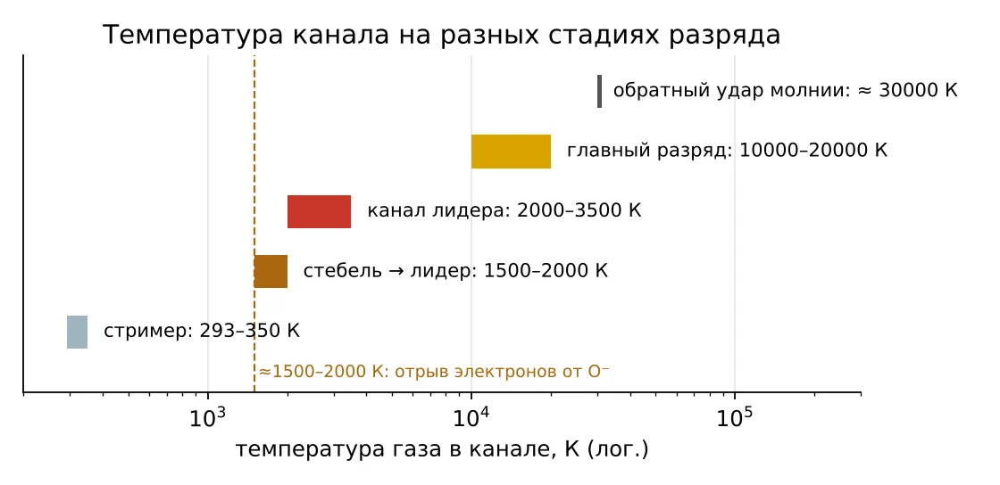
Токи многих стримеров сходятся в общий стебель и греют его.
Холодный газ: электроны прилипают к O₂ за 10⁻⁸–10⁻⁷ с — канал гаснет.
Выше ≈ 1500–2000 К электроны отрываются от O⁻ — канал остаётся проводящим. Это и есть лидер.
В интерактиве · вкладка 3 · наведите курсор
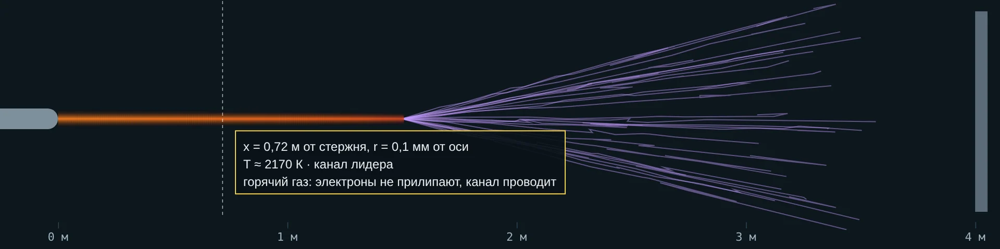
Канал лидера: ≈ 2000 К и выше
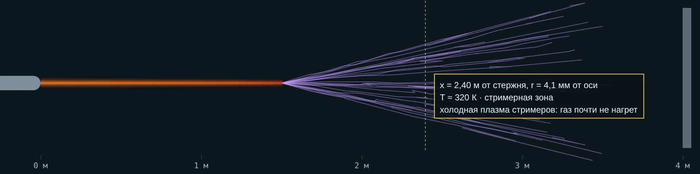
Стримерная зона: ≈ 300 К
Чем старше участок канала, тем он горячее и толще. Отойдите от оси на 1–2 мм — снова холодный воздух.
5 · Как устроен лидер
Хорошо проводит: на метре теряется мало напряжения (модель — 1,5 кВ/см)
Веер стримеров перед головкой, длина Ls = (U − EL·L)/Es
Когда L + Ls = d, канал за микросекунды замыкает промежуток
пробой: L + (U − EL·L)/Es ≥ d
Лидер растёт ≈ 1–3 см/мкс (10⁴ м/с) — на два порядка медленнее стримера.
5 · Развитие во времени · вкладка 3
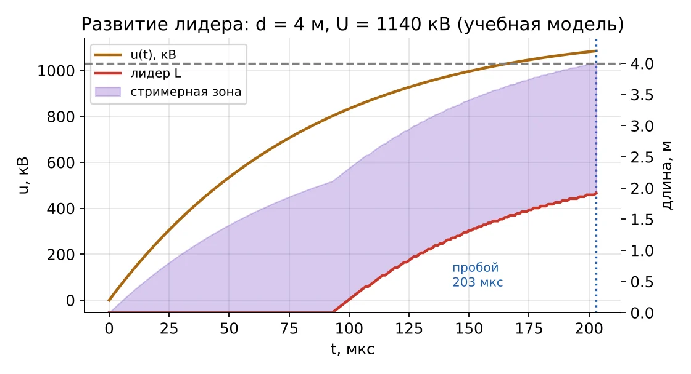
0–90 мкс: напряжение растёт, от стержня только стримеры.
90–200 мкс: стартует лидер, стримерная зона едет впереди него.
203 мкс: зона коснулась плоскости — финальный скачок.
6 · Искра
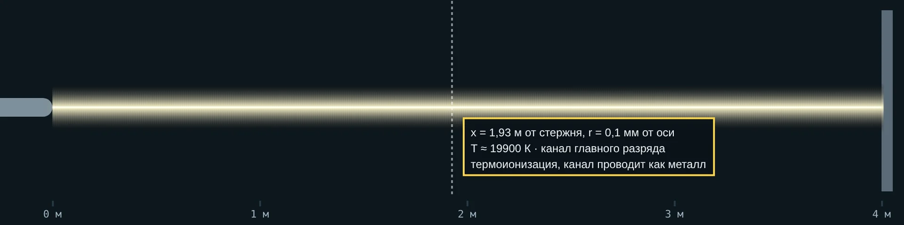
Ток растёт до сотен ампер и выше, газ ионизуется термически, канал проводит как металл
Давление в канале резко растёт — ударная волна. В лаборатории — щелчок, у молнии — гром
7 · Лидер молнии · вкладка 3, режим «молния»
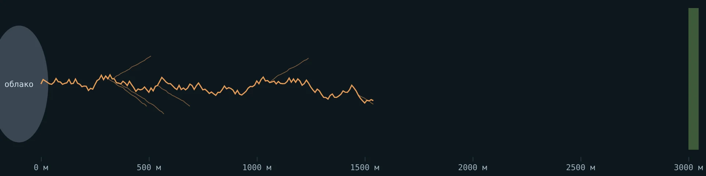
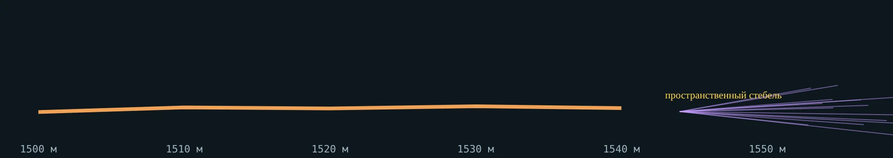
| Лаборатория (+) | Молния (−) | |
|---|---|---|
| Как растёт | почти непрерывно | ступенями |
| Ступень · пауза | — | десятки м · 20–50 мкс |
| Средняя скорость | ≈ 10⁴ м/с | ≈ 2·10⁵ м/с |
| После касания | главный разряд | обратный удар, ≈ 30 000 К |
7 · Какой импульс опаснее
Лидер не успевает: за 50 мкс при 3 см/мкс — 1,5 м. Нужно большее напряжение
Лидер успевает пройти промежуток на фронте — минимум пробивного напряжения
Объёмный заряд стримеров успевает «экранировать» стержень — прочность снова растёт
Поэтому изоляцию ВЛ 330 кВ и выше выбирают по коммутационным перенапряжениям, а формула Галле дана для критического фронта.
8 · Время разряда
tр = tс + tф
Ожидание «эффективного» электрона в нужном месте. Случайно. Уменьшают облучением: ультрафиолет, радиоактивный препарат
От первой лавины до замыкания канала: стримеры, лидер, скачок. Тем меньше, чем больше перенапряжение
8 · Импульс 1,2/50 мкс · вкладка 4
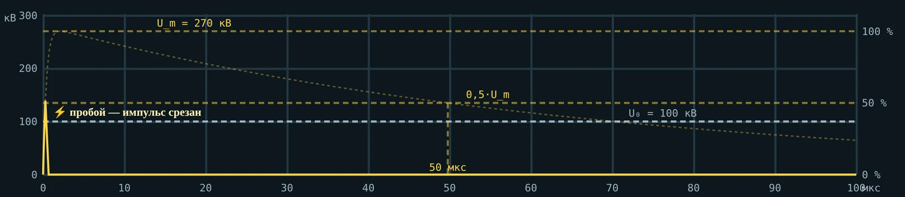
Весь импульс: 50 мкс — спад до 50 % амплитуды
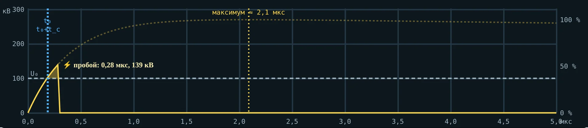
0–5 мкс крупно: пробой на фронте, при ≈ 50 % амплитуды
T₁ = 1,67·(t₉₀ − t₃₀) = 1,67·(0,86 − 0,14) ≈ 1,2 мкс; максимум ≈ 2,1 мкс
8 · Критерий площадей · вкладка 4
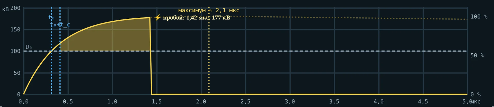
∫(u − U₀)dt = D
Интеграл берём от t₀ + tс до tр.
Малое D — однородное поле (шары), большое D — стержень.
Прямоугольный импульс: tф = D/(U − U₀).
8 · Вольт-секундная характеристика
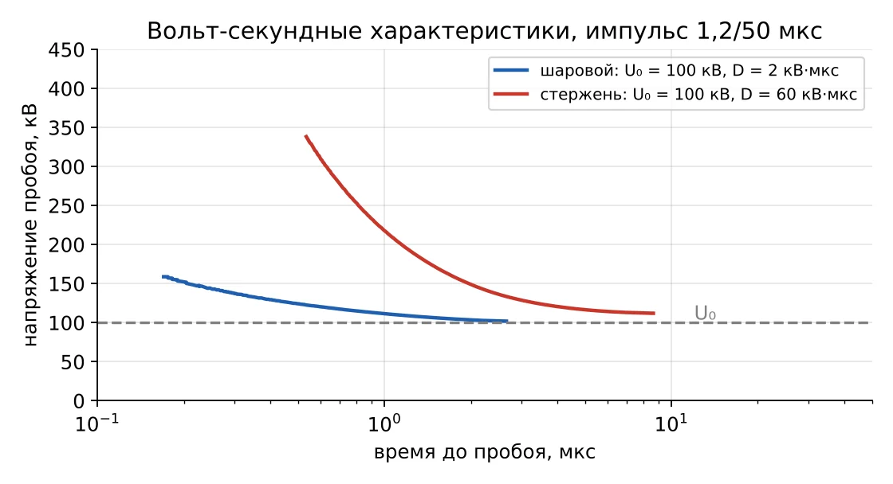
Точка характеристики: напряжение пробоя и время до него при одном импульсе.
Шары: импульсный коэффициент ≈ 1,02. Стержень: ≈ 1,1–1,2 и больше.
Без облучения у шаров — большой разброс.
8 · Координация · вкладка 4
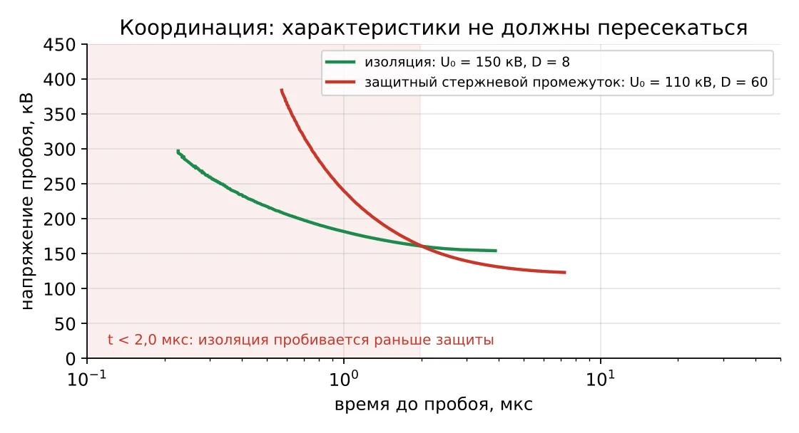
Статически промежуток (110 кВ) ниже изоляции (150 кВ).
Но при пробое быстрее ≈ 2 мкс характеристики пересекаются — изоляция пробивается первой.
Поэтому оборудование защищают ОПН, а не стержневыми промежутками.
Реальный случай 1 · 28 сентября 2003, Италия
Около 03:00 линия Mettlen–Lavorgo (Лукманьер) из Швейцарии в Италию отключилась: дуга на дерево. Нагрузка перешла на соседние линии, они тоже отключились, Италия отделилась от энергосистемы Европы — до 12 часов без света.
Дерево — заземлённое «острие». Зазор стал меньше пробивного: стримеры, лидер, финальный скачок, затем ток КЗ поддерживает дугу. Минимальный зазор до растительности считают по формуле Галле.
Реальный случай 2 · 14 августа 2003, США и Канада
14:02 — Stuart–Atlanta: деревья 9–11 м под проводом на высоте ≈ 12 м. Затем Star–South Canton, Harding–Chamberlin, Hanna–Juniper — при нормальной нагрузке. Каскад, около 50 млн человек без света.
«Прямая причина — разросшиеся деревья»; провисание лишь немного помогло. На деревьях — ожоги током КЗ. После аварии ввели стандарт NERC FAC-003 с минимальным зазором до растительности.
Реальный случай 3 · стандарт NERC FAC-003
U = 362·√2/√3·2,0 = 591 кВ
591 = 3400·1,3/(1 + 8/d)
d ≈ 1,24 м
Наш расчёт — по формуле Галле, k = 1,3, кратность коммутационных перенапряжений 2,0.
| Источник | Зазор |
|---|---|
| NERC (высота 3000 футов) | 3,53 фута ≈ 1,08 м |
| PNNL, Галле, те же допущения | 6,1 фута ≈ 1,86 м |
| Наш расчёт, уровень моря | ≈ 1,24 м |
Ещё 3 случая · вкладка 5 интерактива
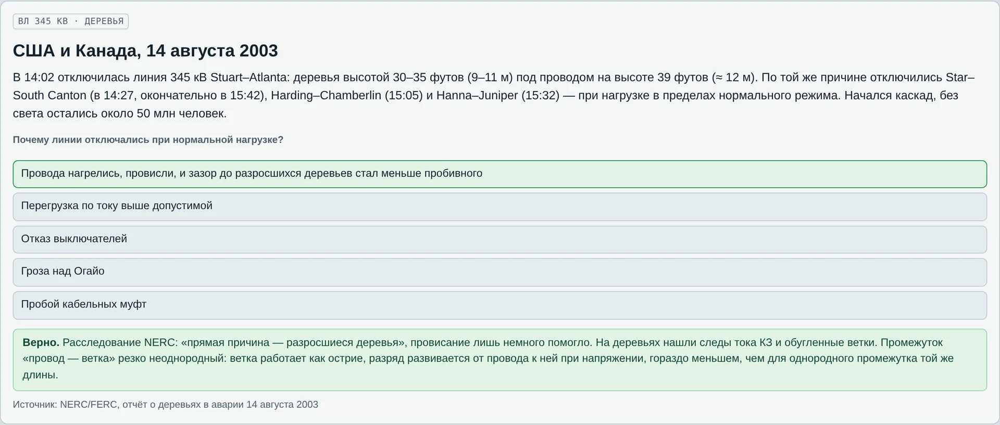
4. Лидер в промежутке 1 м: ударная волна от канала
5. Ступенчатый лидер молнии
6. Защитный промежуток не успел: пересечение характеристик
У каждого случая — вопрос, варианты, разбор и источник.
Практика · вкладка 6 и пособие студента
1. Где лавина станет стримером
6. Насыщение прочности на 10 м
2. Дотянется ли положительный стример
7. Время роста лидера
3. А если острие отрицательное
8. Сколько идёт ступенчатый лидер
4. Подстанция в Хибинах
9. Время пробоя по площадям
5. U₅₀ промежутка 3 м
10. Зазор до дерева по Галле
Итог
1. Что даёт стримеру электроны впереди головки?
5. Почему стримеру нужен лидер в промежутке 5 м?
2. Почему отрицательному стримеру нужно большее поле?
6. При какой температуре стебель становится лидером?
3. Почему корона раньше у «−», а пробой у «+»?
7. Из чего складывается время разряда?
4. Что показывает формула Галле?
8. Почему стержневой промежуток плохо защищает от крутых волн?
Главное
При αx ≈ 20 лавина становится стримером: растёт сама за счёт поля головки и фотонов
Es ≈ 4,7 кВ/см у «+» и 11,7 кВ/см у «−»: пробой острия «+» в 2,5 раза легче
В длинных промежутках горячий лидер несёт потенциал вперёд — прочность насыщается
tр = tс + tф: защита должна быть «быстрее» изоляции
Дома: задачи вкладки 6, тест — вкладка 7. Следующая лекция — закон Пашена и плотность воздуха